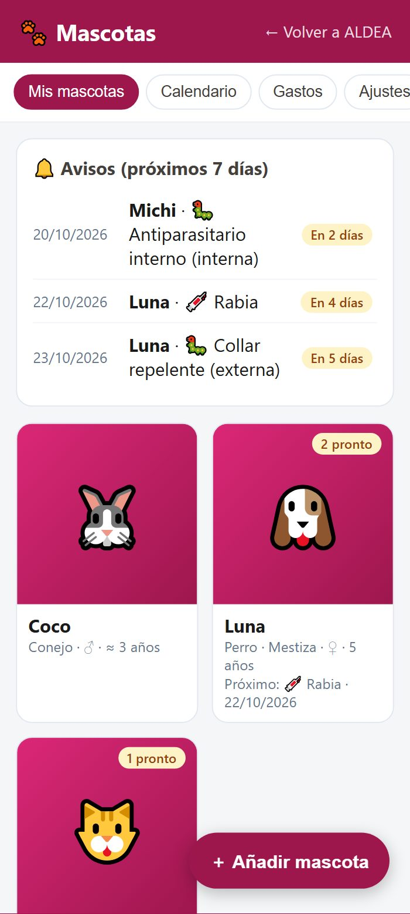

ALDEA reúne en una sola aplicación lo que normalmente acaba repartido entre papeles, cajones, notas del móvil y memoria: los vehículos, la casa, lo que guardas, la salud de la familia, los niños, los libros, las mascotas, tu cuidado personal y tu bodega. Funciona dentro de tu móvil, sin internet y sin cuentas.
Una agenda personal para organizar citas, recordatorios y documentos de tu familia. No ofrece diagnósticos ni valora tratamientos.
Principios de ALDEA
- Tus datos son solo tuyos. Se guardan en tu dispositivo; ni el autor puede verlos. Solo salen si tú haces una copia de seguridad, compartes algo o usas la inteligencia artificial.
- Funciona sin conexión. Internet solo se usa para funciones concretas: buscar medicamentos en el registro oficial, la inteligencia artificial, buscar libros por ISBN, las copias en tu nube y las actualizaciones.
- Gratis en la fase de lanzamiento. Todos los módulos abiertos y sin límites. Cuando pase a ser de pago se avisará antes, con el precio, y tus datos nunca se bloquean (capítulo 4).
- Sin anuncios ni rastreadores.
- ALDEA funciona sin internet y sin cuentas. Las ayudas automáticas (registro CIMA, escáner, inteligencia artificial, nubes) dependen de servicios de terceros y pueden cambiar o dejar de estar disponibles; si fallan, la app sigue funcionando y puedes escribir los datos a mano.
Las aplicaciones
| Aplicación | Para qué sirve |
|---|---|
| 🚗 Flota | Vehículos: ITV, seguro, aceite, neumáticos, averías, taller, multas, gastos, documentos y repuestos. |
| 🏠 Casa | Tus viviendas, en propiedad o de alquiler: averías, mantenimiento, gastos y recibos, comunidad, seguro, vencimientos, inventario y Catastro. Cada vivienda muestra solo lo que le toca. |
| 📦 Inventario | Lo que guardas: con foto, ubicación y precio, y un buscador para encontrarlo en segundos. |
| 🩺 Salud | Tu cuaderno de salud familiar: medicación, citas, vacunas, constantes y documentos. Es un registro personal; no sustituye el consejo de tu médico o farmacéutico. |
| 📚 Libros | Tu biblioteca: dónde está cada libro, qué lee cada uno, series y préstamos. |
| 🐾 Mascotas | Vacunas, desparasitación, veterinario, peso, gastos y avisos de tus animales. |
| 🧒 Niños | Quién lleva a quién: colegio, actividades y horarios, y encargos por WhatsApp a quien se haga cargo. |
| 🌿 Cuidado personal | Peluquería, estética y deporte: cuándo toca cada cosa, y tus apps favoritas. |
| 🍷 Vinoteca | Tu bodega: botellas, cuándo beber cada vino, catas y lista de compra. |
| 🧳 Viajes | Tus viajes organizados: reservas y estancias, qué ver, equipaje, tareas antes de salir y gastos compartidos. |


